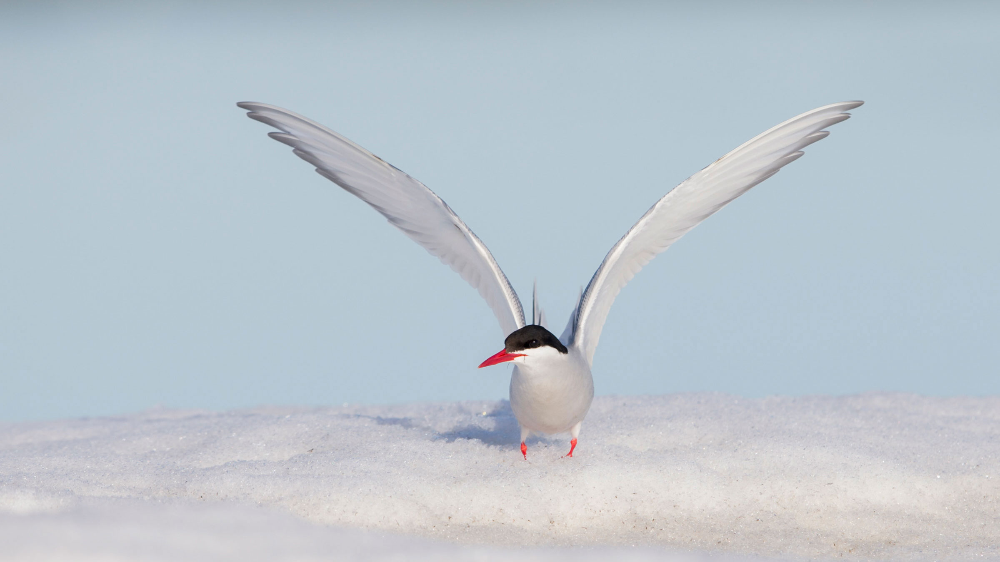
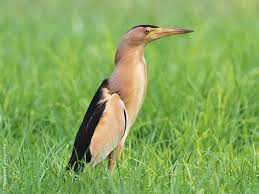
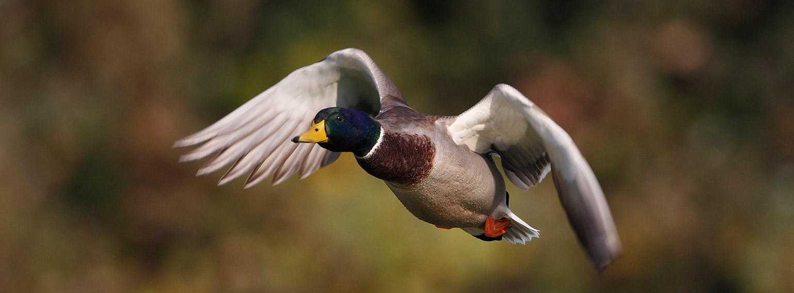

Protected Birds
Various kinds of work are carried out in Ireland in order to protect bird species.
Some of the protected birds are:
- Barn owl
- Arctic Tern 
- Common Crane
- Firecrest
- Little Bittern 
Research and Monitoring
An essential part of bird conservation is monitoring and recording information about the species such as their numbers, breeding habits, etc.
Scientific research may be carried out to dtermine whether a species is in decline and how to address the problem.
Habitat protection
The distruction of habitat is a serious threat to many birds and therefore protecting habitats is crucial for protecting the species.
One example of this is the preservation of wetlands in Ireland.
Control invasive plants and animals
Mink and rats are a predator that threaten many bird species, for example by eating their eggs.
Rhododendron is an example of an invasive plant which can very quickly take over large areas of countryside, disrupting the biodiversity.